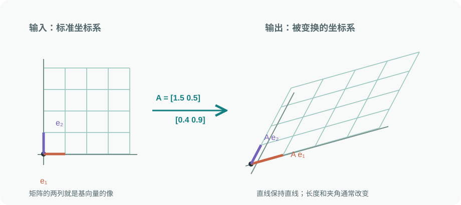

ADVANCED MATRIX ANALYSIS · 28 CHAPTERS
矩阵不是数字方阵，
而是空间的变换。
一张矩阵如何改变长度、方向和维数？为什么正交结构带来稳定性，谱揭示迭代命运？沿着几何直觉、严格推导与可复算的例子，建立一套可迁移的矩阵分析语言。

核心路线
每一层抽象，回答一个新的问题。
什么不变？核、像、秩和坐标系。
变化有多大？距离、正交性与误差。
什么方向保形？何时可对角化？
怎样稳定求解并验证计算结果？
CHAPTER INDEX
课程地图
可独立阅读任何一章；前五章已按“问题 → 图解 → 定理 → 数值实验”的路径重构，其余章节完整保留并逐步升级。
I · 数学语言与谱结构
先理解变换、空间、结构、度量和特征方向。
II · 数值分解与稳定性
从消元到 SVD，再到广义逆与扰动理论。
LU分解与高斯消元法
LU分解 · PLU分解 · Cholesky分解
阅读章节 09QR分解
Gram-Schmidt · Householder变换 · Givens旋转
阅读章节 10特征值分解与谱定理
谱定理 · Rayleigh商 · Courant-Fischer
阅读章节 11奇异值分解（SVD）
SVD几何意义 · Eckart-Young定理 · PCA
阅读章节 12Schur分解与广义特征值
Schur分解 · QZ分解 · 广义特征值
阅读章节 13广义逆矩阵与最小二乘
Moore-Penrose伪逆 · 最小范数解 · Tikhonov正则化
阅读章节 14矩阵扰动理论
条件数 · Weyl定理 · Davis-Kahan定理
阅读章节III · 微分、优化与矩阵模型
沿着梯度、约束、矩阵方程与稀疏结构展开。
IV · 高阶结构与工程应用
随机矩阵、张量、高阶分解与项目实践。
随机矩阵理论入门
Wigner半圆律 · Marčenko-Pastur · 随机SVD
阅读章节 23张量代数基础
模-n展开 · 模-n积 · Khatri-Rao积
阅读章节 24CP分解、Tucker分解与HOSVD
CP-ALS · Tucker分解 · HOSVD
阅读章节 25张量网络与高级分解
Tensor-Train · Tensor-Ring · 层级Tucker
阅读章节 26深度学习中的矩阵分析
Attention矩阵视角 · LoRA · 谱归一化
阅读章节 27矩阵分析前沿趋势
深度NMF · 量子矩阵计算 · 四元数SVD
阅读章节 28综合项目实战
图像压缩 · 推荐系统 · SVD/NMF实战
阅读章节START HERE